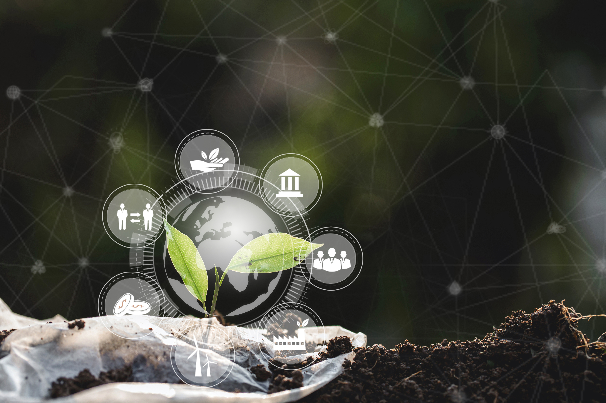

循環事業共創サービスの特徴
循環型事業への参入やサステナビリティ経営を目指す事業者様に、
戦略策定などをサポートいたします。
循環事業の構築

CE関連の新規事業開発にご興味のある企業様に向けて、事業開発の包括的なご支援を行います。
国内外先進事例調査から、ビジネスモデルや実証計画の策定、実際の事業計画の実行の伴走まで実施させていただきます。
M&Aサポート

静脈産業に参入したい企業の皆様に業界／M&Aの専門家が投資のプロセスを包括的にサポートいたします。
企業のソーシング、事業DDやValuation、PMIまでご支援可能です。業界の専門家が、廃掃法の細かなコンプライアンスリスクの診断まで行います。
サステナビリティ経営支援

サステナビリティ経営実行に関わる様々な経営支援を行います。
各種先進事例の調査から、CNやCE達成のためのKPI設定や戦略策定、個別の研修対応まで対応可能です。
事業者様の声

-
1
ビジネスモデルの悩み
「サーキュラーエコノミー（CE）型の事業を構築したいが、既存の廃掃法にどう対応すべきか分からない」
-
2
M&A・投資の悩み
「静脈産業への参入を検討しているが、業界構造が複雑でリスク判断が難しい」
-
3
専門性の不足
「カーボンニュートラル等の目標はあるが、具体的な実行計画やリサーチが追いつかない」
循環事業共創サービスの特徴
循環型事業参入やサステナビリティ経営を目指す事業者様に戦略策定などをサポートいたします。
「実行型」支援
大手戦略ファーム出身者の「経営視点」と、静脈産業での実務経験に基づく「現場知見」を融合。調査やレポートに留まらず、再資源化ルートの構築から運用フローの確立まで、確実に機能するスキームを実現します。
「ハブ」機能
排出事業者、行政、処理業者間の複雑な課題認識を統合し、プロジェクトを推進します。官公庁や多業種にわたる豊富な支援実績と専門知により、スムーズな合意形成と価値の最大化を支援します。
「完全中立」な提案
既存のパッケージや特定の処理施設に依存しない独立した立場から、貴社の事業特性に最適化された独自モデルを設計。経済合理性と環境性を高い次元で両立させる、テーラーメイドな解決策を提示します。